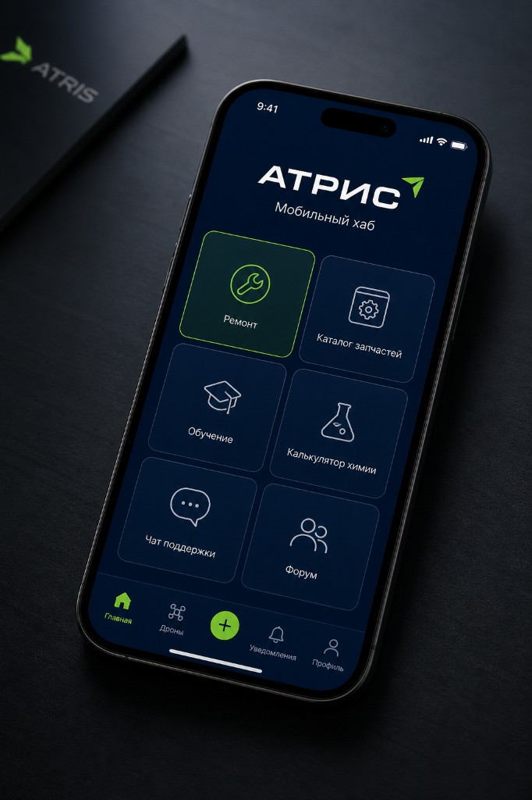
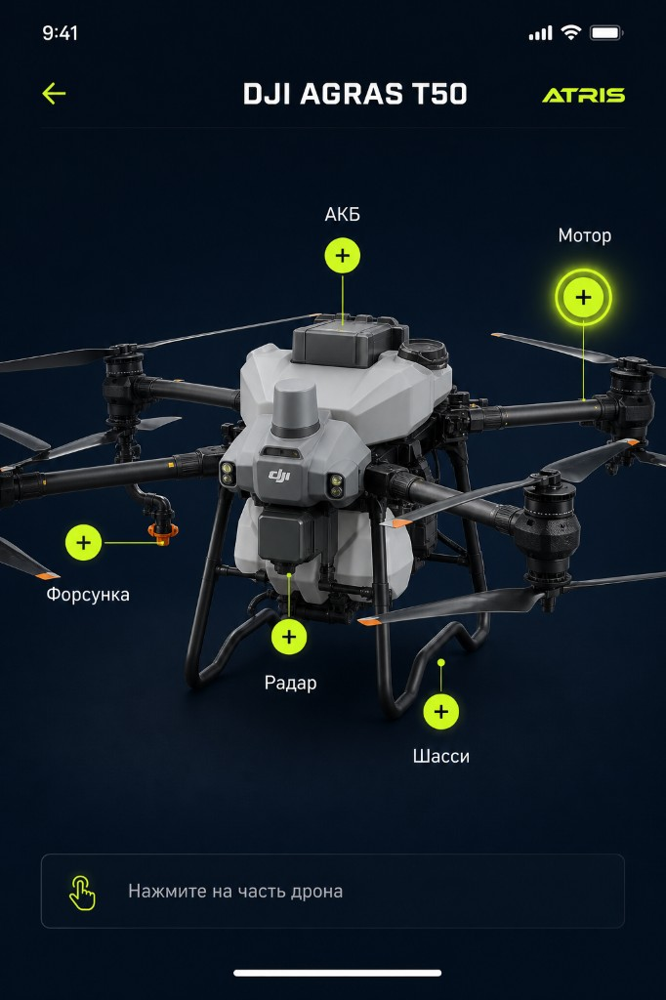
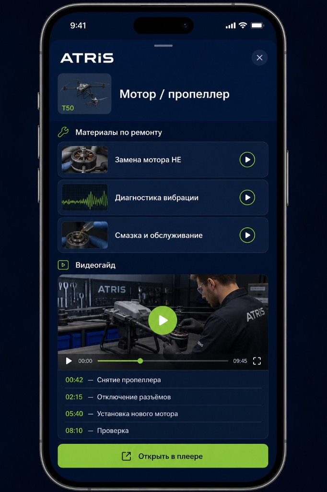
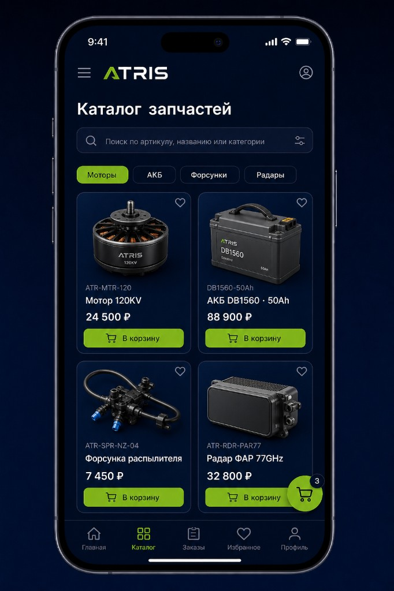
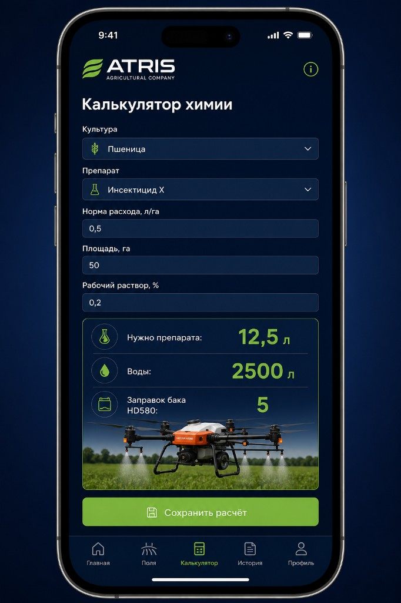
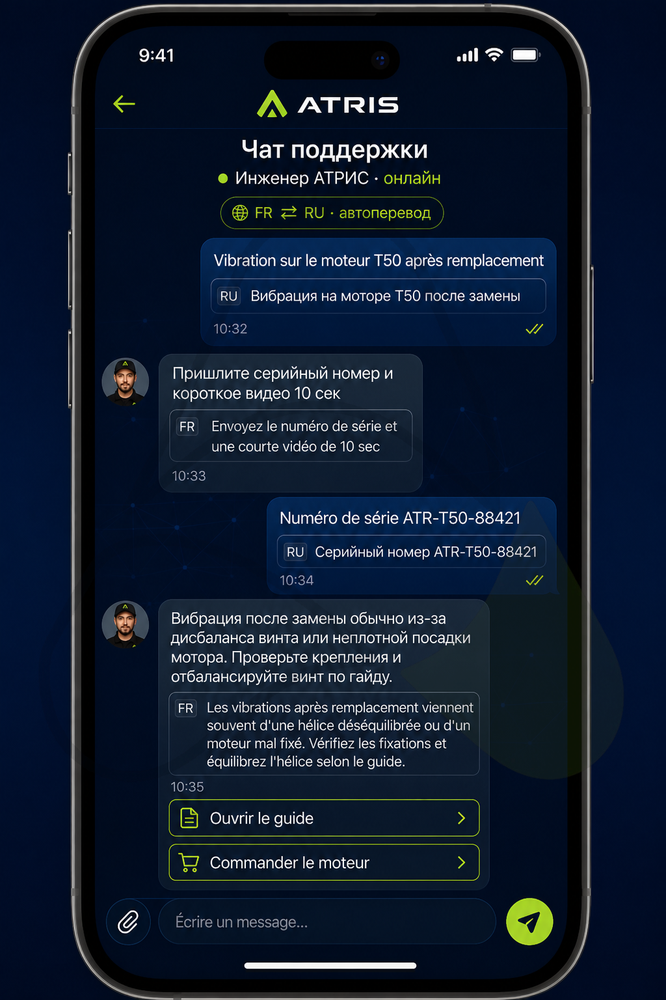

Единое приложение для обучения, ремонта, заказа запчастей и расчёта химии для агродронов DJI Agras и Vector AGR.
Операторы и сервисные инженеры работают с агродронами в поле и на базе. Сейчас знания, инструкции, запчасти и расчёты разрознены. Мобильный хаб АТРИС собирает это в одном приложении в фирменном стиле компании.
01 Интерактивный ремонтВыбор модели → кликабельные узлы на схеме дрона → материалы и таймкоды видеогайда. |
02 Каталог запчастейПоиск по артикулу, корзина и заказ оригинальных комплектующих. |
03 Калькулятор химииНорма, площадь, рабочий раствор → объём препарата, воды и число заправок бака. |
04 Обучение и поддержкаВидео по сборке/разборке, чат с инженерами АТРИС и форум пользователей. |
Шесть модулей на одном экране: ремонт, каталог, обучение, химия, поддержка и форум.

Пользовательский путь: открыл приложение → выбрал задачу. Акцент «Ремонт» показывает приоритетный сценарий для сервиса.
Кликабельные узлы на изображении дрона: АКБ, мотор, форсунка, радар, шасси.

Сценарий: нажатие на узел открывает список материалов по ремонту и обслуживанию этой части.
Для выбранного узла — список материалов и видеогайд с точными метками времени.

Ценность: инженер сразу попадает на нужный фрагмент ролика (например, «05:40 — Установка нового мотора»).
Поиск, категории, карточки позиций и корзина для заказа комплектующих агродрона.

Ассортимент концепта: моторы, АКБ, форсунки распылителя, радары ФАР — позиции именно дроновой номенклатуры.
Расчёт препарата, воды и числа заправок бака под выбранную модель (в т.ч. HD580).

Вход: культура, препарат, норма, площадь, раствор. Выход: литры препарата/воды и заправки бака.
Прямая связь с инженером АТРИС с автопереводом: клиент пишет на своём языке, специалист отвечает на русском.

Сценарий: оператор пишет по-французски → текст переводится на русский для инженера → ответ инженера переводится обратно на французский.
Готовы обсудить приоритеты модулей, контент (видео/схемы) и формат партнёрского пилота.
1 MVPРемонт + каталог + видеогайды по 1–2 моделям. |
2 РостКалькулятор химии, чат поддержки, личный кабинет заказов. |
3 СообществоФорум, база кейсов, обучение операторов. |
4 ИнтеграцииСвязка с CRM/складом и менеджерским хабом АТРИС. |